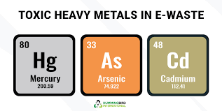
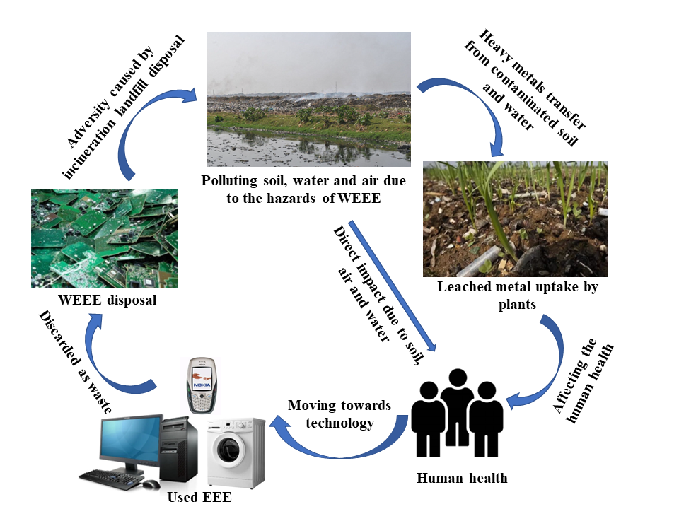

What is E-Waste?
Electronic waste, also known as end-of-life (EOL) electronics or e-waste, refers to discarded, recycled or refurbished electrical and electronic products.Common items in e-waste streams include computers, mobile phones, large household appliances, and medical equipment.

Typical electronic waste devices include but are not limited to:
1.Communication and information technology devices such as smartphones, cell phones, desktop computers, laptops, hard drives, and circuit boards.
2.Small appliances such as toasters, microwaves, vacuums, hair dryers, power tools, fans, and heaters.
3.Large appliances such as refrigerators, dishwasher, washing machine, refrigerators, freezers, and air conditioners.
4.Home entertainment devices such as PCs, DVDs, VCRs, Blu-ray players, video game systems, televisions, and radios.
5.Electronic utilities such as lamps, light bulbs, batteries, heating pads and smartwatches.
6.Office and medical equipment such as printers, IT servers, network hardware, and audio & video equipment.
Causes of E-Waste
The rapid expansion of technology has led to an increase in the production of electronic devices, resulting in a significant rise in electronic waste, or e-waste. One of the primary causes of e-waste is the growing demand for electronic products.
When electrical appliances break down, many consumers choose to replace them instead of repairing them, especially if buying a new one is more cost-effective than fixing the old one. Additionally, the yearly release of new gadgets encourages people to upgrade their devices more frequently, rendering older models obsolete and often discarded. This discarded electronic equipment is what we refer to as e-waste.
There are two key factors that make e-waste an escalating environmental issue:
1.Toxic Chemicals
2.Slow Decomposition
Environmental Impact of E-Waste
The rapid growth of technology has led to an increase in electronic waste (e-waste), which contains harmful chemicals. These chemicals make e-waste both costly and challenging to process. This issue has become an increasing concern in global. When electronic waste is disposed of improperly in landfills, the toxic substances it contains begin to leach into the soil, air, and water, creating significant risks for human health, wildlife, plants, and the overall environment.
E-Waste Effects on Air
Air pollution is a major concern when electronic waste is disposed of by informal methods such as burning, dismantling, or shredding. These processes release dangerous dust particles and toxins, including dioxins, into the air. Exposure to these harmful substances can damage the respiratory system, leading to chronic diseases and even cancer. The impact of air pollution extends beyond humans; it also affects plants and animals, disrupting ecosystems and biodiversity.
E-Waste Effects on Soil
When e-waste is improperly discarded in landfills or illegal dumpsites, harmful substances such as flame retardants and heavy metals can seep into the soil. This contamination can also reach the groundwater, affecting water supplies. Future crops planted in contaminated soil are at risk of absorbing toxic elements, making them unsafe for consumption. In addition to posing health risks, soil contamination diminishes the fertility and productivity of agricultural land, affecting food safety and farming practices.
E-Waste Effects on Water
Heavy metals from e-waste that enter groundwater eventually find their way into rivers, lakes, and other bodies of water. This contamination leads to acidification and toxicity in the water, making it hazardous for both aquatic life and humans. The acidification can kill freshwater and marine organisms, severely disrupt biodiversity, and harm entire ecosystems. Furthermore, communities located near contaminated water sources may suffer from unsafe drinking water and diminished livelihoods due to damaged aquatic resources.